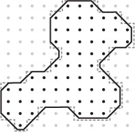

| Package | Description |
|---|---|
| gov.usgs.earthquake.nshmp.geo |
Geographic data classes and utilities.
|
| Modifier and Type | Method and Description |
|---|---|
static GriddedRegion |
Regions.copyOf(GriddedRegion region)
Creates a copy of a
GriddedRegion. |
static GriddedRegion |
Regions.createGridded(String name,
LocationList border,
BorderType type,
double latSpacing,
double lonSpacing,
Location anchor)
Creates a
GriddedRegion from a list of border locations. |
static GriddedRegion |
Regions.createRectangularGridded(String name,
Location loc1,
Location loc2,
double latSpacing,
double lonSpacing,
Location anchor)
Creates a
GriddedRegion from a pair of Location s. |
static GriddedRegion |
Regions.toGridded(Region region,
double latSpacing,
double lonSpacing,
Location anchor)
Creates a
GriddedRegion with the same shape as the supplied
Region. |
| Modifier and Type | Method and Description |
|---|---|
static GriddedRegion |
Regions.copyOf(GriddedRegion region)
Creates a copy of a
GriddedRegion. |
boolean |
GriddedRegion.equalsRegion(GriddedRegion gr)
Compares this
GriddedRegion to another and returns true if
they are the same with respect to aerial extent (both exterior and interior
borders), grid node spacing, and location. |